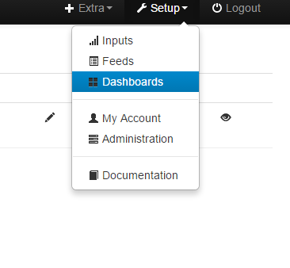

You may notice that 3 new repositories have been created in the emoncms git account, 'Dashboard', 'Schedule' & 'Device', all of them currently empty, but over the coming weeks, the respective modules will be detached from the main emoncms code, and will occupy those repos.
The reason for this, is to slim down the emoncms core installation to provide new users with a basic functional emoncms system, from which they can later add whichever modules they want, and at a pace which suits the user.
Most of the modules, thanks to Chaveiro are already able to be easily detached, and adding modules to a local installation can be achieved by cloning the respective module into their emoncms/Modules folder, in much the same way as the 'App' module is currently added. Clear instructions how to install the modules will be provided when the changeover takes place.
I'll update the forum as and when more information becomes available.
Paul
Re: IMPORTANT! - Modularisation of emoncms
Work has progressed today in separating the modules from the core emoncms code, and the various repositories are now populated with the respective modules, all of which are in the main emoncms git account.
The first module to be fully detached is the 'device' module, and for all new installations this module will not be installed by default, but can easily be added by cloning the device module into the emoncms/Modules folder.
Also, whenever existing systems are updated via a git pull, you will notice that the device module will be removed, but again, can be re-added as above.
In either case, to add the device module;
The installation guide will be updated shortly. donePaul
Re: IMPORTANT! - Modularisation of emoncms
Tonight, the 'dashboard' module has been separated from the main emoncms core files in the 'master' branch, and placed into it's own repository.
The result of this will be that if you make a new installation using the master branch, or git pull 'master' from an existing installation, the dashboard module will not then be installed. However, it can be easily installed (or re-installed) by following this guide, and git cloning the dashboard module into your Modules folder.
Please note: as all existing dashboard settings are stored in MYSQL, re-installing the dashboard module will restore your dashboards! - they are not deleted.
Eventually, this will also apply to the 'stable' branch too.
Paul
Re: IMPORTANT! - Modularisation of emoncms
Hi Paul Reed, today I'm installing a fresh emoncms with this new version and I add the dashboard, it works half, because the graphics work well but just that, all other widgets are missing in view mode
I can see them in edit mode, but not in view mode
Re: IMPORTANT! - Modularisation of emoncms
I found the same problem locally and on site http://emoncms.org/
Re: IMPORTANT! - Modularisation of emoncms
I would try clearing your browser cache, maybe even trying a different browser altogether.
Modulisation is not changing the code, it's the same code that was installed previously.
Paul
Re: IMPORTANT! - Modularisation of emoncms
Hi Paul thanks, I actually use two different browser(Firefox and Chrome) and a private windows(Incongnito window) also, to avoid cache problems but the same result. I have and old version in another server and that work fine
Re: IMPORTANT! - Modularisation of emoncms
I see the same thing using the emoncms v9 Beta SD image.
I have two dashboards. One containing a couple of widgets (cylinder and jgauge) works normally, another containing a multigraph works OK if selected through Setup>Dashboards and then click on 'view'
However the same dashboard selected through 'Dashboards' gives a blank dashboard
Re: IMPORTANT! - Modularisation of emoncms
OK I found the cause of my dashboard problem.
If there is an underscore in the alias of the dashboard, then it does not work accessed through 'Dashboards' which builds the url as http://servername/emoncms/dashboard/view/dashboardalias
Going via setup/Dashboards builds the url as http://servername/emoncms/dashboard/view?id=x
The solution is to delete the alias, or change it to one without underscores.
Re: IMPORTANT! - Modularisation of emoncms
Hi derek_j thanks for answering. And happy new Year :)
I followed all their recommendations. Although I did not have underscore in dashboards or spaces.
On the platform emoncms.org I succeeded, fix with something very simple, apparently feed must also be public, but that not fix the problem on my server.
In the browser I was seeing if any error or important message and popup, I see one (On my server):
SyntaxError: unterminated string literal
It referes to this line in "view" archive(line #208-209-210):
$('body').css("background-color","#<br />
<b>Notice</b>: Undefined index: backgroundcolor in <b>/var/www/html/emoncms/Modules/dashboard/Views/dashboard_view.php</b> on line <b>36</b><br />
");
I just have that error.
On emoncms.org I try to load the page to see what message it throw, and I see this
Object { embed: "1", feedid: "103666", colour: "000000", units: "C", dp: "2", scale: "1", fill: "" } rawdata:59:1
Object { embed: "1", feedid: "103667", colour: "000000", units: "", dp: "2", scale: "1", fill: "" }
No problem on emoncms.org
Re: IMPORTANT! - Modularisation of emoncms
Trystan pushed an update a couple of days ago to correct a mysql issue revealed as a result of the dashboard separation. Can you ensure that you are up to date with the latest git version.
Re: IMPORTANT! - Modularisation of emoncms
Raul Reed Thanks. I'm already updated, but the problem persist
Following my last comment, indeed the error is that line. The original line of code is this
$('body').css("background-color","#<?php echo $dashboard['backgroundcolor']; ?>");
Apparently the CSS can not find the right color so it generates an error.
This error -> Undefined index: backgroundcolor
I changed the line of code and I put any color, like this :
$('body').css("background-color","#be4141");
That solves the problem momentarily
This is the file with the problem in line 34:
emoncms/Modules/dashboard/Views/dashboard_view.php
Re: IMPORTANT! - Modularisation of emoncms
Hi,
I'm new of emoncms
Last night I've experienced the missed Dashboard menu problem in a Windows local emoncms 9.2 installation.
I've upgradad to 9.3 but the dashboard problem persisted. Then (after a big search through the site and google) I discovered that the new installations doesn't install the Modules Device and Dashborad (and Schedule I suppose).
I followed the instructions on this thread and finally the Dashboard appeared.
Unfortunately the instructions mentioned before refers to Raspberry only.
Then in Windows I simply copied the missed modules under C:\wamp\www\emoncms\Modules\dashboard and under C:\wamp\www\emoncms\Modules\device
Afterthat upgrade the DB as noticed in the previous post.
In order to avoid problems to others new emoncms user I suggest to upgrade the installation documentation for all the kind of installations or include the Dashboard, Device, Schedule folders to the new 9.3 installer.
I hope this helps
Massimo
Re: IMPORTANT! - Modularisation of emoncms
Massimo, you are of course correct, all of the guides need to be maintained.
I (as a community contributor) try to keep the Raspberry Pi guides up to date, but I dont have a Windows system, so I can't really maintain the guide.
It would be good to have someone with a Windows system to look at that guide and try to maintain it. Any volunteers?
Paul
Re: IMPORTANT! - Modularisation of emoncms
I did update to "low-write 9.3 | 2016.01.16" version, with no error message. Than did also install Dashboard.
However, now my old Dashboards are messy, with error messages and blank items. I am also not able to modify or delete them. I am also not able to create new Dashboards from "new" Dashboard menu, because when I click "New" nothing happens.
http://192.168.1.11/emoncms/dashboard/list.json
Devices Menu I have the same problem...
I am able to view and click "New Device", but nothing happens, and it shows me this:
http://192.168.1.11/emoncms/device/list.json
Is there a way to "debug" this? Anyway to find what can be doing wrong?
Followed steps:
1) http://openenergymonitor.org/emon/node/11407
2) https://github.com/emoncms/emoncms/blob/master/docs/RaspberryPi/general.md#module-installation
Thanx!!
Re: IMPORTANT! - Modularisation of emoncms
This is more to do with your upgrade path than 'Modulisation of emoncms', please post in your own thread.
Why are you installing the device module, are you intending to use a devicekey per device that is user configured, instead of an apikey??
Paul
Re: IMPORTANT! - Modularisation of emoncms
Sorry...
I did it here, because it looks like BUG when install new "Modulisation of emoncms" over updated Emoncms.
If I had Dashboards already, than they do Dashboard not to work.
I'd like to use devices to create "different interfaces" for each device, because I have many devices sending data to Emonhub, for different reasons.
Re: IMPORTANT! - Modularisation of emoncms
We have done a fresh clean install on a Raspberry Pi 2 with a full version of Jessie Raspbian. Then we followed the installation instructions and installed the latest stable repository version. Our website says its 9.3 2015.12.30 at the bottom. We installed Emonhub and have the radio working and receiving data. We are also running from an external usb HD and just booting from the SD card.
We tried to install the dashboards modules by:
cd /var/www/Modules
git clone https://github.com/emoncms/dashboard.git
But they do not appear. We have also tried the config and device modules and do not see those either.
Running and update database just says that it is up to date already. Error logs do not show any errors.
Any ideas on what to try next?
Re: IMPORTANT! - Modularisation of emoncms
Did you follow the Raspbian Jessie installation guide - if so, emoncms should be installed at /var/www/emoncms & the Modules Installation guide tells you install modules within /var/www/emoncms/Modules
You appear to be installing the modules to the wrong location /var/www/Modules
Paul
Re: IMPORTANT! - Modularisation of emoncms
sry, I mistyped that. I did follow that guide and it is at the /var/www/emoncms/Modules directory
Re: IMPORTANT! - Modularisation of emoncms
So just to double check that there hasn't been any other mistypes ;-)
can you confirm what you get;
Paul
Re: IMPORTANT! - Modularisation of emoncms
Sure, not a problem :)
pi@raspberrypi:~ $ ls -l /var/www/emoncms/Modules/dashboard
total 48
-rw-r--r-- 1 pi pi 3538 Jan 20 12:44 dashboard_controller.php
-rw-r--r-- 1 pi pi 1264 Jan 20 12:44 dashboard.js
-rw-r--r-- 1 pi pi 8952 Jan 20 12:44 dashboard_langjs.php
-rw-r--r-- 1 pi pi 1728 Jan 20 12:44 dashboard_menu.php
-rw-r--r-- 1 pi pi 7555 Jan 20 12:44 dashboard_model.php
-rw-r--r-- 1 pi pi 833 Jan 20 12:44 dashboard_schema.php
drwxr-xr-x 10 pi pi 4096 Jan 20 12:44 locale
drwxr-xr-x 3 pi pi 4096 Jan 20 12:44 Views
drwxr-xr-x 12 pi pi 4096 Jan 20 12:44 widget
pi@raspberrypi:~ $
Re: IMPORTANT! - Modularisation of emoncms
That's strange, I can't replicate that here.
From a Jessie installation only completed last night, I've just added the dashboard module as per the guide, and it installed OK.
Paul

Re: IMPORTANT! - Modularisation of emoncms
Ok, thanks for the quick responses. I'll start over and see what I missed.
Re: IMPORTANT! - Modularisation of emoncms
Reloaded using Wheezy this time and it worked perfectly. I'll have to try again later with Jessie.
Re: IMPORTANT! - Modularisation of emoncms
Here everything works again... but I have no idea how.